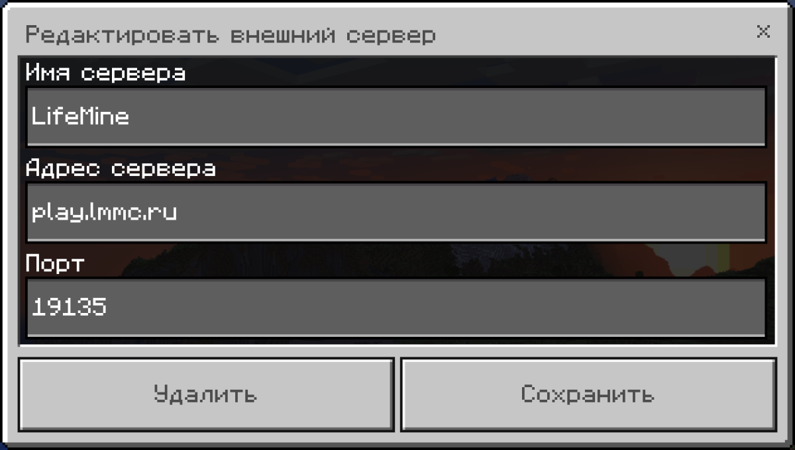
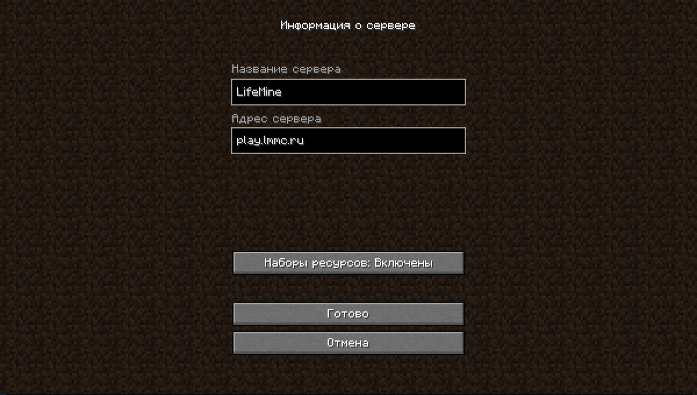

КАК ЗАЙТИ НА СЕРВЕР LIFEMINE
1. Скачайте Minecraft на своё устройство
Первым делом скачайте и установите Minecraft JAVA/BEDROCK на своё устройство. Для игры на сервере труебуется следующая версия Minecraft:
Minecraft BEDROCK 1.17.40 - 1.18.10
Minecraft JAVA Edition 1.18+
2. Добавьте сервер в список
Добавьте сервер в свой список серверов MC в соответствии со своим изданием:
IP: play.lmmc.ru
Порты:
BEDROCK 19135
JAVA 25565


3. Приятной игры!
© 2015-2024 LifeMine - Сервера Minecraft PE/BE/JAVA